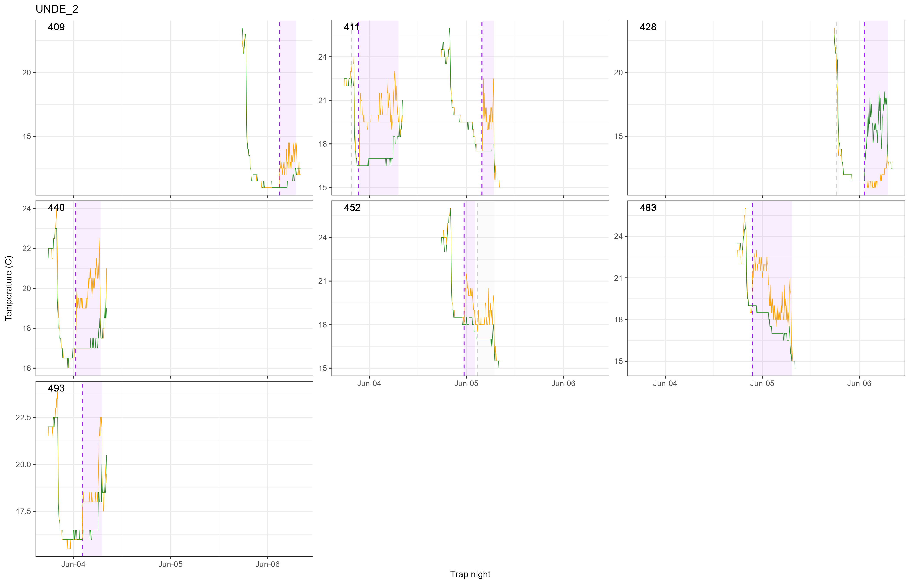
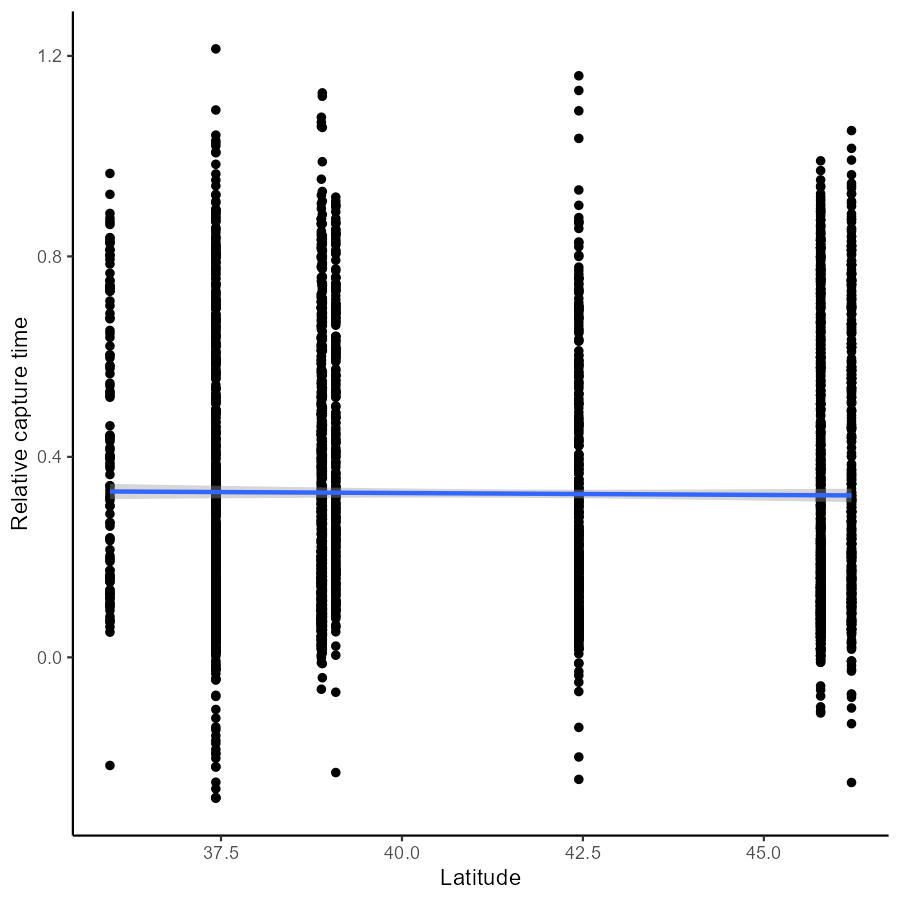
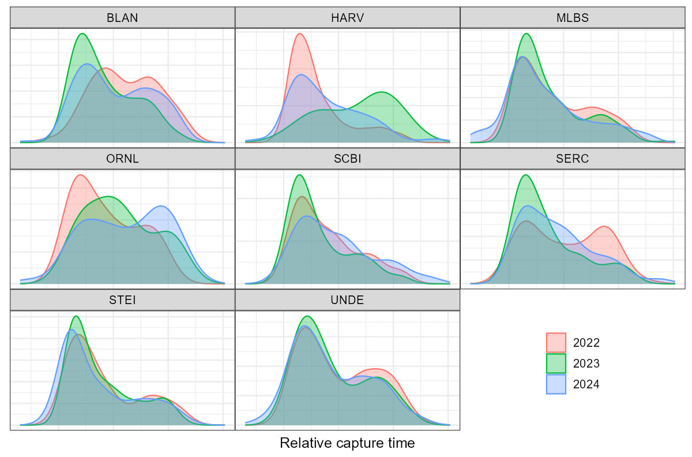

Behavior
Individual behavior of an individual is expected to be associated with disease dynamics in a number of ways. The timing and location of movements can influences exposure to pathogens and how an individual chooses to expend energy can influence its ability to fight off infection. We chose to assess 4 metrics of behavior for this project: 1) Activity timing, 2) range size, 3) exploration, and 4) learning. Since this is a field study and we weren’t able to follow each individual, we estimated proxies for these behavioral metrics
Many of these behavioral metrics rely on recaptures. From 2022 to 2024, there were 2,142 Peromyscus individuals that were recaptured at least once (44.9% of total individuals). On average, individuals that were captured more than once were captured 3.3 times on average.
Activity timing
Our indicator for activity timing in this study is capture time. From 2022 - 2024, our group added ibutton temperature sensor pairs to all traps at one of each plots within the eight NEON sites of interest. These sensors, which log temperatures every five minutes, allowed us to estimate the time at which an individual entered a trap4 and, thus, the time at which the individual is active.
This technique of deriving capture timing works because the air inside increases above the ambient air when an animal is in it. Figure 6 shows an example of these data. For most analyses, capture time is presented as the fraction of the night (sunset to sunrise) that had elapsed when the capture occurred. This relative capture time scaling allows for more equitable comparisons across latitudinal gradients and photoperiods (Figure 7).
Figure 8 shows the distribution of those relative capture times for Peromyscus, how they differ across sites and through time.

Figure 6: Capture time estimate example: ibutton data (green and blue lines) from a three-day trapping event at plot #2 from the UNDE NEON site in 2024. The dotted vertical lines correspond to the algorithmically-derived estimate of the time an individual entered the trap. Purple rectangles correspond to the segment of time during which the temperature difference between inner and outer buttons is above the trigger threshold (1°C). No data are shown for trapnights in which there was no capture.

Figure 7: Linear relationship between relative capture time (y) and latitude (x).

Figure 8: Peromyscus relative capture time density distributions across eight NEON sites over three years.
Range size
Our indicator of range size is the average distance between traps that an individual was captured between each subsequent capture. As it depends upon recaptures, this metric is biased towards individuals that have been captured more times times (Figure 9); individuals captured only once always have an average trap distance of 0. But for those individuals that were recaptured, it provides some information about the size of the space that the individual occupies. Figure 10 shows the distribution of movement distances among Peromyscus across NEON sites.

Figure 9: Distribution of the log-transformed distance (meters) between subsequent captures, averaged across all recaptures, for an individual Peromyscus.

Figure 10: Distribution of log-transformed distance (D, meters) between subsequent captures of recaptured individuals, seperated by site and sex.
Exploration
Our proxy for exploration is trap diversity: the number of unique traps an individual was captured in. We scaled trap diversity by the total number of captures to alleviate some of the bias towards recaptures (Figures 11, 12). While this (weighted) trap diversity is somewhat associated with trap distance, they are not equivalent (Figure 13). An individual that travels far along a consistent path is probably functionally different from one that stays within a relatively small range, but uses more of that range. The former individual would have a higher trap distance and a lower trap diversity than the latter.

Figure 11: Relationship between individual capture count (x) and number of unique traps captured in (y).

Figure 12: Relationship between raw (x) and weighted (y) trap diversity. The regression line is a second-order polynomial.

Figure 13: Relationship between (log-transformed) trap distance and weighted trap diversity.
Citation to original Orrock paper needed↩︎